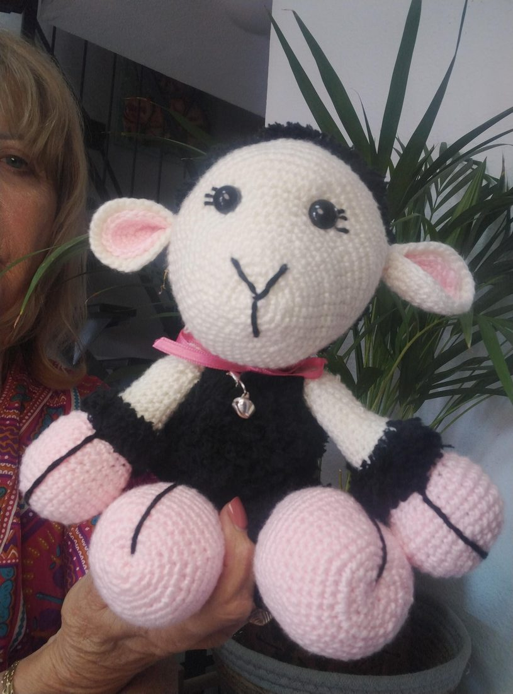
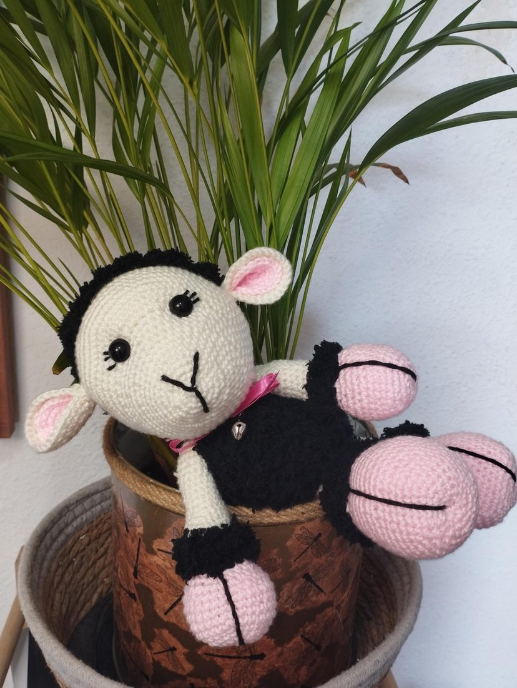
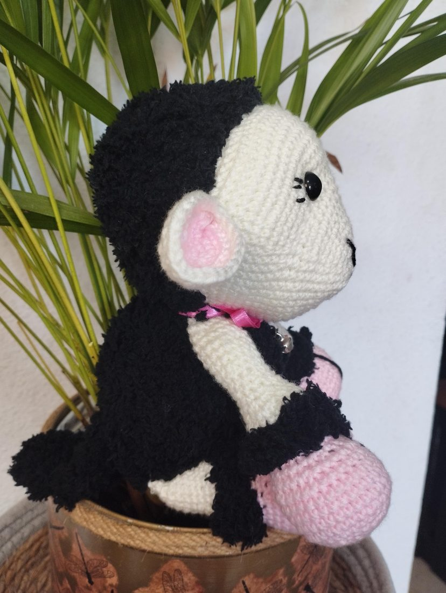
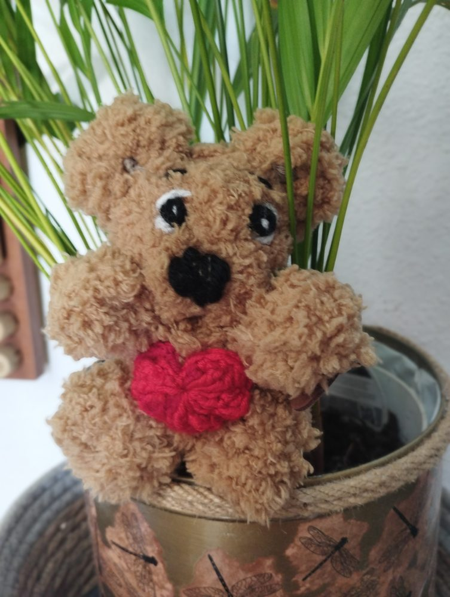

Tiny handmade friends, stitched with love.
Crochet plushies, amigurumi and heirloom dolls, crocheted one at a time by Joanna in Tenerife.



1 of 4
featured on Etsy
Baa Baa Black Sheep
A 30 cm handmade sheep with a little bell on a ribbon — soft baby yarn, safe and gentle, and ready to love.
See this friendthe dolls
Handmade dolls
Heirloom-quality dolls in a soft bamboo, silk & cashmere blend — each one truly one of a kind.
the cuddly ones
Chenille plushies
Extra-soft friends in chunky chenille yarn — big, squishy and one of a kind.
the collection
Amigurumi
Amigurumi friends — each one unique and one of a kind.

that's me!meet the maker
Hi, I'm Joanna.
I'm a grandmother who creates beautiful, happy toys. Each stitch is crafted with love, for that comforting feel of an age gone by.
No mass production here — each piece is unique and very special. A little character to love and appreciate for many years ahead, by you or anyone you'd like to please.
Thank you for looking today. I look forward to making you and your loved ones happy too.
— Joanna
the shop
Every friend is one of a kind. Find them on Etsy.
Shop on EtsyGot an idea for a new friend? Leave it in the comments — I love hearing them.